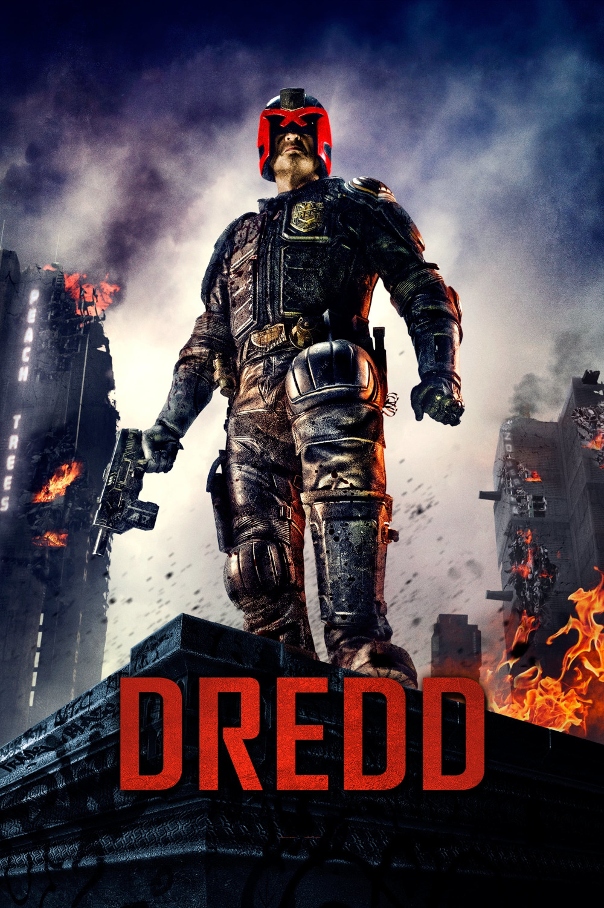

Мировая премьера: 21 сентября 2012
Слоган: Я – закон.
Сюжет: Будущее не столь красочно и великолепно, каким его представляют современные люди. Через несколько столетий человечество окажется на грани самоуничтожения. Анархия и беспорядки уничтожат авторитет власти и системы правосудия, и отчаянной мерой станет введение института Судей – универсальных полицейских, которые упростили бы весь процесс задержания, следствия и суда. Но в конец обнаглевших преступников страшит встреча лишь с одним из Судей – Дреддом, пересажавшим и расстрелявшим не одну сотню насильников, террористов и жадных до человеческих страданий маньяков.
Режиссёр: Пит Трэвис
В основе: Комиксы о Судье Дредде (Великобритания, выходят с 1977, авторы – Джон Вагнер и Карлос Эскуэрра)
В ролях: |
Карл Урбан | Судья Дредд |
| Оливия Тирлби | Кассандра Андерсон | |
| Лена Хиди | Маделин "Ма-Ма" Мадригал | |
| Вуд Харрис | Кей | |
| Донал Глисон | Технарь клана | |
| Лэнгли Кирквуд | Судья Лекс | |
| Джейсон Коуп | Итан Цвирнер | |
| Уоррик Грайр | Калеб | |
| Рэки Айола | Верховный Судья | |
| Деобия Опарей | Парамедик Ти Джей | |
| Джуниор Синго | Амос | |
| Люк Тайлер | Фрил |
Бюджет: $ 50 млн.
Кассовые сборы в США: $ 13 млн.
Кассовые сборы в мире: $ 41 млн.
Продолжительность: 1 ч. 29 мин.
Рейтинг: 7.1